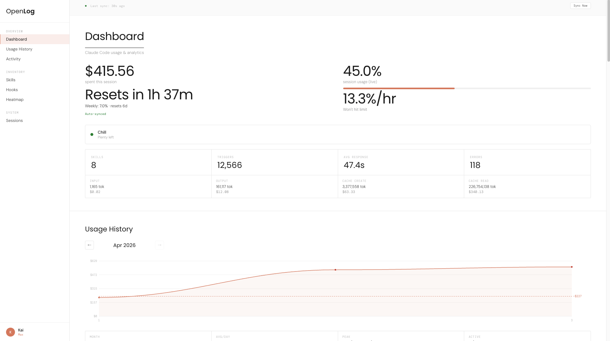
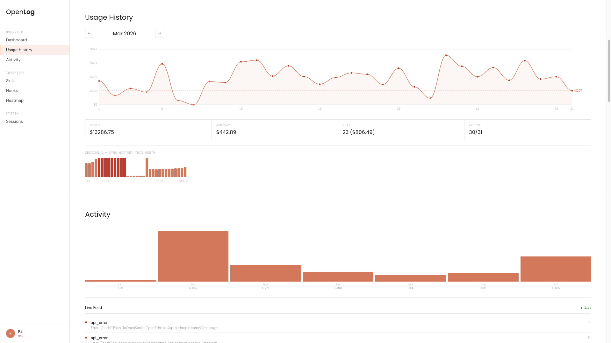
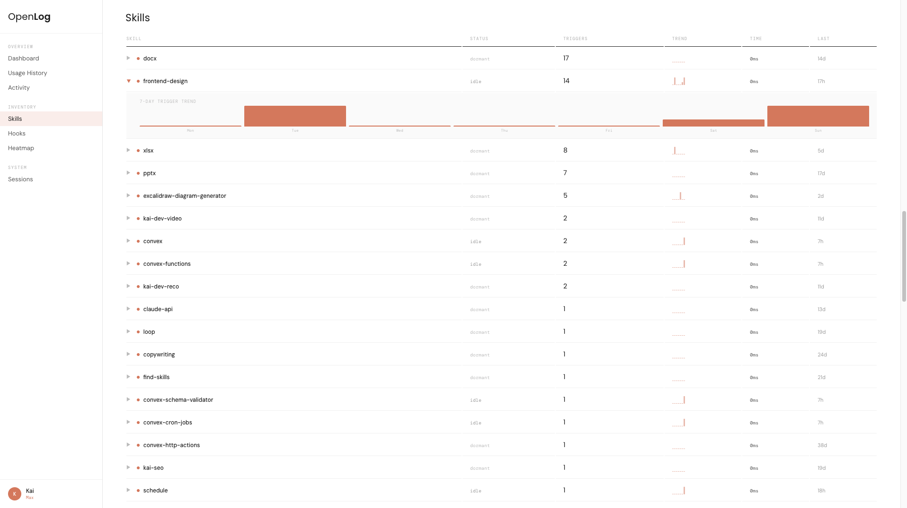
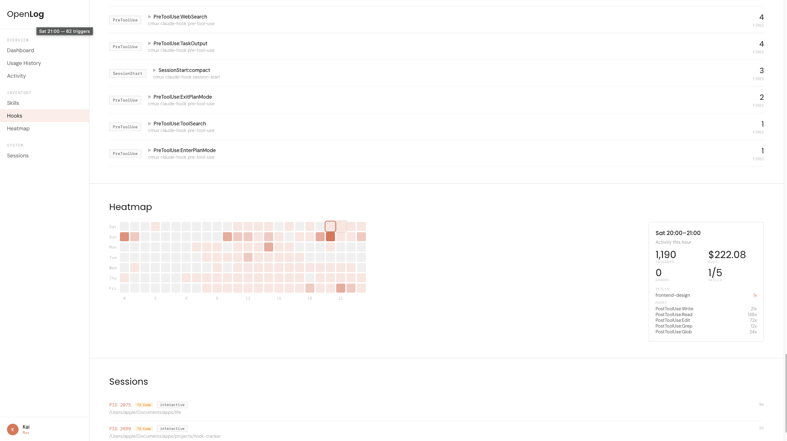
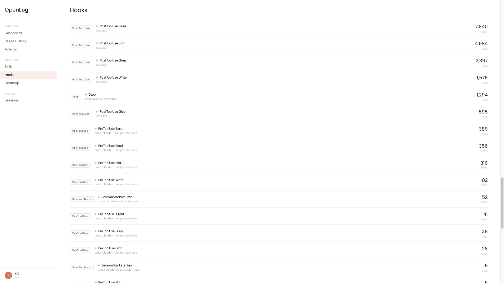

That's real data from a real Claude Code Max subscriber. Anthropic is subsidizing your plan at 133x the price you pay. They've already started tightening limits. The developers who understand their usage now will keep shipping when the subsidy pulls back. The rest will hit a wall and not know why.

On March 26, Anthropic announced peak-hour throttling for all tiers. Session limits now burn faster during business hours. Weekly limits stay the same, but the window to use them is shrinking. This is the first move. There will be more.
"We're adjusting our 5 hour session limits for free/Pro/Max subs during peak hours. During weekdays between 5am–11am PT / 1pm–7pm GMT, you'll move through your 5-hour session limits faster than before."
Thariq, Anthropic — Mar 26, 2026Your data already exists locally. OpenLog reads it and makes it useful.
Not estimated. Synced directly from Anthropic's API response headers. Session and weekly limits, exact to the percent.
Input tokens, output tokens, cache creation, cache read — each priced out. Know which operations cost the most.
See your %/hour rate and a countdown to 100%. Know whether to keep pushing or save your budget for later.
50 skills installed and no idea which ones fire? See trigger counts, 7-day trends, and daily breakdowns per skill.
Every PreToolUse, PostToolUse, Stop, and SessionStart hook — tracked with fire counts, daily patterns, and command details.
7-day grid showing exactly when you're active. Click any cell for triggers, costs, skills, and hooks in that hour.
Monthly cost graph with daily granularity. Spot the days that burned $500+ and figure out what drove them.
Every running Claude instance — Terminal, T3 Code, VS Code — listed with PID, project directory, and runtime.
Anthropic throttles during 1–7pm GMT on weekdays. OpenLog shows you when to shift compute-heavy work to off-peak hours.




Anthropic confirmed your session limits drain faster between 1–7pm GMT on weekdays. A task that costs 15% of your budget at 8am costs 25%+ at 3pm. OpenLog tells you which side of that line you're on.
Two dependencies: Bun and tmux. If you don't have them, one Homebrew command each.
$ git clone https://github.com/kaiwilliams-dev/open-log.git && cd open-log && bun install
Reads your local data from ~/.claude/projects/. No API keys. No accounts. Zero data leaves your machine.
$ bun run start
Click Sync Now. Within 5 seconds you'll see your exact usage percentage, token costs, and burn rate. Done.
http://localhost:7777
MIT licensed. Fork it, modify it, ship it. Your data never touches a server.